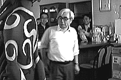
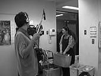

入院中、Y氏が連載していた近況報告。上の写真はそのラストのものです。
97.4.1（火）
MITスタジオでアフレコ。今日は美輪明宏、小林薫両氏。
谷藤さんと、今後の特効処理をどうスムースに進めるかを話し合う。特効の布陣を大幅に増強する必要アリ。
宮崎監督がアフレコに行っているため、作監上がりの最終チェックが滞り、せっかくお願いした動画外注さんに待ってもらう事態が発生しつつある。何とかせねば。
11時から、入社式。宮崎監督、鈴木プロデューサーがアフレコのため欠席ということで、寂しい入社式となった。ちなみに新入社員は3人である。
97.4.2（水）
特効橋爪さん来社。
作画の一部をデジタルペイントに変えたため、特効部分を別セルにすることになり、総枚数がまた増えそう。作業量には変化無いからいいけど。
アバコスタジオで、総勢31人での、ガヤのアフレコ録り。
ラッシュのロール分けがオムニバスから送られてくる。R1/1~175 R2/176~333 R3/334~502 R4/503~729 R5/730~876 R6/877~1033 R7/1034~となる。
今週のアフレコによる作監不足を補うため、社内のCUTに関してはできるだけ分けて作業をすることに。
以前コミックボックスの編集三好氏と、ノルシュテイン特集号の発売日をかけて寿司を勝ち取ったわけだが、忙しくてなかなか食う暇がなく、うやむやにされるのか、と思っていたら、昼前に取材に来た三好氏がついに寿司をおごってくれる。早速私は「もののけ姫」特集号が、公開前に出るかかけよう」ともちかけたら「いやです」ときっぱり断られてしまった。
97.4.3（木）
CD1パートのアフレコが始まっているが、線撮りが多く、作業が思うように進まないため、とにかく差し替えられるものは差し替えてしまうことに。
夜D1パートを差し替えてオムニバスに渡したと思ったら大塚君のミスでラッシュチェック前のCUTをつないでしまったことが判明。夜の10時半に瀬山さんを捕まえて、オムニバスから回収したラッシュから問題のCUTを抜いてもらう。今日は大塚君の厄日。
MITスタジオにて森繁久彌氏のアフレコ。明日予備日を取ってあったが、1日で終了。
所沢の橋爪さんの家に特効上がりの回収に向かうが、夜の大雨で完全に道に迷う。
97.4.4（金）
MITスタジオにてアフレコ。10分で終了。
最後の原画を桑名氏が終わらせる。これで原画の全作業終了。
再びラッシュを回収し、今日と明日でCD1パートの差し替え。
97.4.5（土）
久しぶりに職場委員会が行われる。鈴木プロデューサーから様々な報告あり。
昨日近藤喜文氏と見ていた土曜日から金曜日の星占いが初日からあたる。口は災いのもと。
97.4.6（日）
今日は宮崎監督が休み、と聞いていたが、４時頃出社。作監が足りないので助かる。
舘野さんがじゃがバタを作りスタッフに配る。
97.4.7（月）
相変わらず作監が足りないので、社内は分けに分け完全に自転車操業状態。
追い込みに向けて特効のメンバーを集めたら、とたんに特効CUTが無くなってしまった。仕上げ上がりはそれなりに上がっているのに、なぜか特効の無いCUTばかり上がってくる。単なる偶然だろうけど、そんなもんか。
仕上げのスタジオに入れを持って行かなくちゃーと思いつつ動画チェックを見ると、１CUT365枚のCUTがもうすぐ上がりそう。ラッキーと思ったらデジタルペイントCUT。トホホ…。
今日も鈴木プロデューサーらは夜中の２時すぎまでジブリで宣伝会議。宮崎監督も「まだやってるの？」とあきれた顔。しかし監督も２時まで仕事をしている。２人とも若者よりはるかに元気。
ところで、12月に交通事故に遭い、ずっと入院していた原画Y氏が3月28日に退院した。これからは自宅にてリハビリを続けていくことに。先日、退院してすぐ、Y氏はスタジオを訪れたが、松葉杖ながら元気そうなのでみんな一安心した。
97.4.8（火）
最後のカッティングが5月2日に決定。当初は4月26日の予定だったが、原撮がかなり多くなりそうな状況と、音楽の録音との兼ね合いもある為の変更。
フランスで出版社を経営しているギゲール氏らが来社。なんと30歳にして、アニメプロダクションやCG会社をグループ経営している凄い人。最近ではテレビ制作会社も傘下に収めたらしい。フランスの徳間社長か。なぜか漫画家の田中政志氏も一緒にきていた。
97.4.9（水）
アヌシーアニメーションフェスティバルから案内が来るが、今年は仕事が終わらないので行けそうにない。こんなにスケジュールを遅らせたのは誰だ、と考えてみれば、制作である自分の責任。
久しぶりに演助の有冨語録炸裂。宮崎監督がへろへろになっている安藤作画監督を見て、冗談で「有君、総務部行ってヒロポンもらってきて」と言ったら「ハイ！わかりました」と総務部に「ヒロポンください」と走って行ったとか。宮崎監督曰く「無知は力だ」。
97.4.10（木）
井上直久さんから筍が届く。森友さんが煮込んでスタッフに配る。
鈴木プロデューサーらとブエナビスタの会議が夕方から行われていたが、夕食に注文した寿司の配達が遅れ、到着したのが、ブエナの人が次の用事でジブリをたった後。ということで寿司がメインスタッフコーナーに置かれ、残っていたスタッフに配られた。
97.4.11（金）
先日私がかけたトレスマシンがずれていたと仕上げから指摘アリ。必死でかけ直すもなかなかうまくいかない。たまにはこういうどうやってもうまくいかないハズレCUTがあるのだ。
先月28日に北海道で放映された「どさんこワイド」のジブリ特集に私と山田氏は登場しなかったらしい。なんのこっちゃ。
97.4.12（土）
昨日、「ツール・ド・信州」用ユニフォームのサイズ見本が送られてくる。と同時に開催日が8月3日に決定。夏真っ盛りである。死人が出るなこりゃ。
元ジブリ出版部、現某アニメ作品のスペシャルコンセプター野崎氏が、高畑監督の原稿を受け取るために来社。ところが高畑監督は急遽休み。唖然とする野崎氏。ところで野崎氏はジブリにいた頃よりよく食べ、よく寝て、自転車に乗っているからか、足に、やけに筋肉が付いている。それを見た高坂氏は、「あれは瞬発力を産む筋肉で持久力が付いたわけではない」と現実から目をそらそうとしている。
Ｄプロジェクトの本田さんがジブリ特番の取材のため来社。早速整体の模様をカメラに収めようとするが、見事にＮＧ。前途多難なようである。
「映画興行師」の出版記念パーティのために、鈴木プロデューサーと宮崎監督、そして高畑監督が前田さんへお祝いのメッセージを送ることになった。ビデオカメラにその様子を収めるため、その取り扱いを柳沢さんに教わる。メッセージは柳沢さんがインタビュアーとしてインタビュー形式で。鈴木さんは「ゆかりちゃん（柳沢さんのこと）と2人で写って実は夫婦だったことにしちゃおうか」などと、またまた返答に困ることを言っているし……（まさか、「いいですね」とも言えない。）しかし、結局、うまく撮れず（ビデオカメラを持つのも撮るのも初めてだったから）取材に来ていたディ-・プロジェクトの本田さんにビデオ取りをお願いする。出来上がりを私は見ていないので何とも言えないが上手くいったらしい。さすが、プロ。ちなみに高畑監督は今日は来なかった。
97.4.13（日）
奥井氏とデジタルペイントのスケジュールについて簡単な打ち合わせ。
97.4.14（月）
若林さんからの「原撮では音のタイミングがつかみづらい」とのもっともな苦情を受け、できるものは今週半ばに動撮に差し替え予定。動撮９CUT、本撮約20CUT。
先週末に特効がある仕上げ上がりがどっと上がってくる。早速社内も含め一気に特効に取りかかる。
ジブリでは忙しくなってくるとよく出前を取るのだが、店の数が少ないためいいかげん食べるものがマンネリになりつつあった。そんな時、ジブリのポストに、ある中華屋の出前のメニューが投げ込まれていた。それは先週末の話。今日まで日曜日も含め、毎日そこから出前を取っている。
97.4.15（火）
サンライズの制作大橋氏の紹介で、彼の担当している作品で動画チェックをしていた佐光さんが社内に入って動画を手伝ってくれることに。現在作監が少しづつしか出ないため、作業人員を増やすには1CUTをばらせる社内に入ってもらうしかないのだ。トホホ。
ジブリホームページのアクセス数が先週2万回を超えたと聞いた。しかしその割に来るメールが、少ないような気がする…。
リテークで原画を直していたＫ君がようやくその作業を終了。やっと動画作業に入る。
97.4.16（水）
テレセンから全ラッシュ回収。瀬山編集へ。伊藤君は、原撮から動撮への差し替え分を、今日中に撮影しラボに入れるため素材作りに必死。
動画を何人も紹介してもらったサンライズ大橋氏が部下の若者3人をつれて来社。社内を案内する。
背景についてはある目処がたってきた。
忙しいからか、一村教授が髪の毛を染めに行く暇が無いようで、どんどん白髪が露出してきた。どこまで白くなるのか楽しみである。
97.4.17（木）
14時にカウンター止めしたラッシュを回収し、15時からラッシュチェック。すぐさま瀬山編集に持ち込み差し替えを行う。
また今年もツバメがジブリの駐車場上の壁に巣を作る。昨年は下に停めてあった車の上から猫がジャンプし、雛をさらってしまった為、今年は車を巣の下からずらして停めている。
差し替えたラッシュを持って居村君がオムニバスへ電車で向かった、と思ったら中央線が人身事故のため、吉祥寺手前で立ち往生。もののけのタタリか。
97.4.18（金）
最近すっかり鈴木プロデューサーのペースに巻き込まれている野中氏の部下望月氏は、西川口に住んでいるためよく帰りの電車に乗り遅れている。その対策として会社の近くに引っ越すことを計画しているらしいのだが、その分労働時間が激増するのは、米沢氏で実証済み。
作監のペースがさらにダウン。ここ6日間で16CUT！しか上がっていない。動画の作業量も、一時一万枚を超えていたのが現在はその半分。CUTを分けて一人一人の手持ちを少なくし対処しているが、もうこれ以上は無理。安藤先生がんばってくれ～。
97.4.19（土）
夜10時に宮崎監督からサブウェイのサンドイッチの差し入れアリ。
望月氏引っ越しを決意。明日必ず部屋を決めてくると宣言。
「もののけ姫」の制作が終わったら、四国八十八箇所を巡拝してまわりたいと言う宮崎監督（ホントか？）。仕事の疲れがたまるとたびたび呟いているらしい。ツール・ド・信州にお遍路に今年の夏は盛りだくさんになりそうだ。
97.4.20（日）
社内の動画が手空きになりつつあるため、線撮り素材作りを手伝ってもらう。ところで「もののけ姫」の線撮りは、演助伊藤氏のこだわりで非常に見やすいものになっている。のはいいのだが、その分素材作りが大変なのだ。一度宮崎監督に「今回の線撮りは見やすい」と言われりゃ、もう線撮りと言えど質は落とせない。
今日宮崎監督はお休み。
97.4.21（月）
特効の谷口さん来社。打ち合わせを行う。
宮崎監督の棚からついにCUTが消える。机に2CUT持ってはいるが、もう少しで原画チェックが終わりそう。
ツバメの巣の下で、猫がもの欲しそうな顔をして見上げている。しかし今年は捕れまい。フフフ。
97.4.22（火）
特効のあるセル検上がりがどっと上がってくる。
1cutの中にノーマルペイント、デジタルペイント、リスマスクにデジタル特効が混在しているような複雑なcutが多い。正確な残枚数を計算したいのだが、各部署で枚数が増えたり減ったりすることもあり、なかなかうまくいかない。
97.4.23（水）
ラッシュチェックあり。今日は画面がやけに暗く見づらいので、また目が悪くなったか、と思ったら単に焼きが暗かっただけ。もう一度焼き直し。
撮影CUTが山積みになってきたため、とりあえず線撮り分の一部を旭プロにお願いする。
4月末にもう一度D１までの差し替えを行うことに。
鈴木プロデューサーが外から帰ってきてテレビを付けた、と思ったらあっと言う間に消した。中日が巨人にボロ負け中。近づかないどこ。
97.4.24（木）
デジタルペイント用にシリコングラフィックスのコンピューターが社内に搬入。動画作業が終了した希望者もオペレーターとして投入予定。
安藤作監、今週中には必ず作監を終わらせる宣言。
鈴木まり子、松尾コンビで作業が続けられている大判デダラボッチが、このままでは終わらないことが発覚。急遽救援部隊投入を決定するも、ジブリには大判トレス台が2台しかないため、明日朝一に、1借りる 2買う 3作る。の3つの作戦を開始予定。
97.4.25（金）
宮崎監督の原画チェックが完全に終了。やることが突然無くなった為、線撮り素材の色塗りを始める。けっこう楽しそう。また合間をぬって取材がぞくぞくと入り始める。
倉庫でぼろぼろの大判トレス台を発見。ただし上に乗せる曇りガラスが無かったため、近くの硝子屋で購入。またもう一台をテレコムから借りることに。
バーに急場のデジタルペイントルームが作られる。
97.4.26（土）
昨夜11時頃、町田に住む制作バイトの鈴木君が、いつものように八王子経由の横浜線で帰ろうとしたところ、中央線が車両故障でストップ。なんとか八王子には着いたものの、乗り換えの階段の途中で無残にも横浜線の最終電車が発車。結局その中央線に乗っていた鈴木君を含む5、60人が八王子で放り出される。そのあまりの仕打ちに、怒った乗客で八王子駅は暴動寸前に。駅長まで出てきて平謝りしたそうだが、タクシー代を出すとか、ホテル代を出すとか、あとの手当ては何もせず、結局鈴木君は八王子駅周辺で野宿！。ひどいぞＪＲ東日本。
28日に予定されている西村雅彦氏と上條恒彦氏の、D2パートの抜き採り用フィルム作成のため、台詞のあるCUT付近を棒つなぎする。
深夜、ついに作監が終了。最後のCUTはその安藤氏が動画を描くことに。
今日スタジオキリーへ仕上げに出したCUTの線撮り素材を作っていた宮崎監督が、夜11時すぎに突然作画リテークを発見。急遽CUTを回収しかぶせの素材を作る。
キャンペーン用、ディダラボッチの着ぐるみの試作品披露がバーにて行われた。但し、この着ぐるみ、170cm以下の細身の人しか着ることができない。そこで、選ばれたのが演助・有冨さん。しかし、細身の有冨さんでもかなりきついらしく、「マジでやばい」と息も絶え絶え。これを着れる人が本当にいるのか?

97.4.27（日）
300枚近くもある大判CUTのマシンをかけるが、大判マシンでしかかけられない部分の動画がうすく、いくら知恵を絞っても線が出ない。その部分のみトレスし直してもらうことに。
97.4.28（月）
MITスタジオにて西村雅彦氏と上條恒彦氏のD2パート抜き取り。
残り総枚数を出そうとするも、作監上がり以降の枚数変動が大きく、かなり手間取る。
フランスから、学校の卒論でヨーロッパと日本のアニメ用語の比較研究をしている学生が来社。質問攻めにあう。
97.4.29（火）
ゴールデンウィークにもかかわらず、当然全員出社。動画アップ＆最後のカッティングを控え、みんな必死の作業。
97.4.30（土）
Dプロジェクトの本田さん等が来社。ジブリ特番の取材。出前のお姉ちゃんやイマジカの回収便の人にまでインタビューを敢行。ジブリの１日に密着。

D1パートの差し替えを今日若林さんの元に戻す予定であったが、原撮を動撮に差し替える4CUT分が間に合わないため、明日に延期。
カッティングにそなえ、線撮り素材作りが最高潮に達する。宮崎監督以下、動画が手空きになった人は皆、ポスカ片手に、OHPコピーに色ぬり。
カッティング以降の差し替え予定を若林さんと相談。
| 次のページへ |
| 日誌索引へ戻る |
| 「もののけ姫」トップページへ戻る |